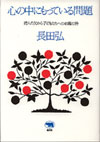
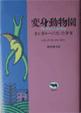
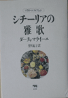
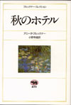
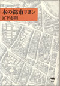
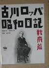
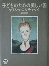
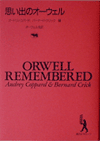
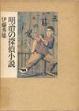
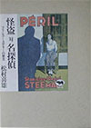

|  | 心の中にもっている問題 路傍の石文学賞・富田砕花賞 |
マウス1・2 ピュリツァー賞 |
|  | 変身動物園 カーネギー賞・ |
 | シチーリアの雅歌 カンピエッロ賞 |
|  | 秋のホテル ブッカー賞 |
 | 本の都市リヨン 大佛次郎賞 |
|  | 古川ロッパ昭和 梓会出版文化賞 |
 | 子どものための美しい国 産経児童出版 |
|  | 思い出の 日本翻訳出版文化賞 |
 | 明治の探偵小説 日本推理 |
|  | 怪盗対名探偵 日本推理 |
死者の歌 ノーベル平和賞 |